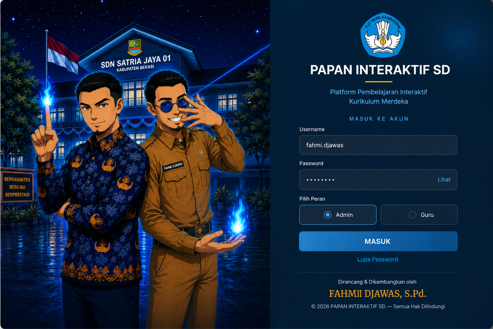

Tiga layar baru di depan Dashboard — Opening, Setup Admin, Login — beserta autentikasi lokal, logout, dan penyelarasan warna seluruh aplikasi dengan latar Login. Data kurikulum, 30 engine game, dan seluruh 27 layar yang sudah final tidak disentuh.
Gambar latar Login berukuran 1149 × 1369 piksel — rasio 0,84, tegak. Versi yang dipakai adalah gambar tanpa baris identitas tercetak di bawahnya, jadi seluruh bidangnya murni ilustrasi dan tidak ada teks yang bisa hilang saat dipotong — identitas pembuat memang sudah dirender sebagai teks HTML hidup. Papan interaktif 75 inci dan desktop berasio 1,78, mendatar. Memaksa gambar tegak memenuhi seluruh bidang mendatar dengan cover akan memotong sekitar 53 persen tinggi gambar — kedua wajah, papan nama sekolah, dan bendera hilang bersamaan, menyisakan potongan badan dan lantai.

Token navy dan biru yang sudah disetujui tidak diganti — hanya ditambah tiga nada gelap dan satu cahaya sian yang diambil dari gambar, agar Login dan Dashboard terbaca sebagai satu produk. Kartu isi tetap putih; aplikasi tidak menjadi gelap seluruhnya.